Sejarah
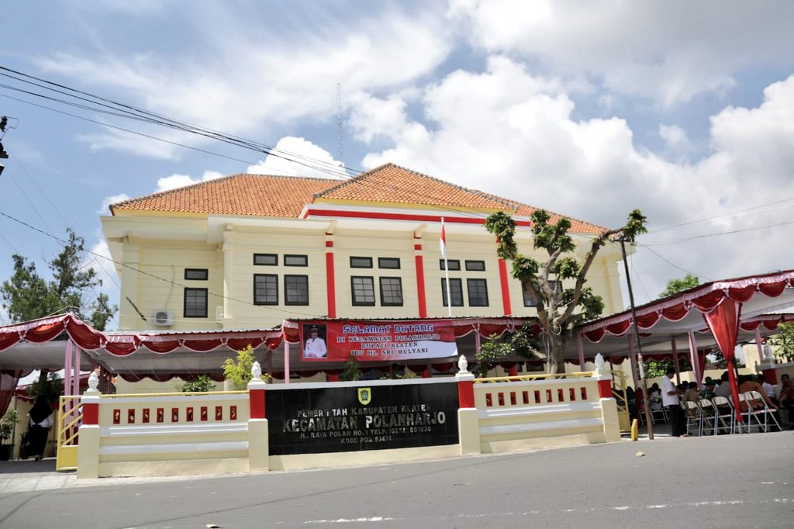
Kecamatan Polanharjo merupakan salah satu kecamatan yang berada di Kabupaten Klaten, Provinsi Jawa
Tengah. Secara historis, wilayah Polanharjo berkembang seiring dengan pembentukan sistem
pemerintahan daerah di Kabupaten Klaten pada masa pemerintahan kolonial hingga pascakemerdekaan
Republik Indonesia.
Nama Polanharjo diyakini berasal dari kata “Polan” yang merupakan nama wilayah atau pemukiman lama,
serta kata “Harjo” yang dalam bahasa Jawa bermakna ramai, makmur, atau sejahtera. Penamaan ini
mencerminkan harapan masyarakat setempat agar wilayah Polanharjo menjadi daerah yang berkembang dan
membawa kesejahteraan bagi penduduknya.
Geografis
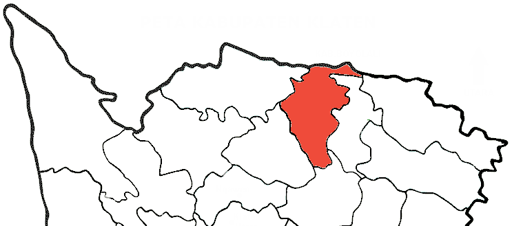
Kecamatan Polanharjo merupakan salah satu kecamatan di Kabupaten Klaten, Provinsi Jawa Tengah yang
terletak di bagian utara wilayah Kabupaten Klaten. Secara geografis, Kecamatan Polanharjo berada
pada wilayah dataran rendah dengan kondisi topografi yang relatif datar hingga bergelombang ringan,
sehingga sangat mendukung aktivitas pertanian dan permukiman.
Wilayah Kecamatan Polanharjo dikenal memiliki tanah yang subur dan didukung oleh sumber daya air
yang melimpah, seperti mata air alami dan jaringan irigasi. Kondisi ini menjadikan sektor pertanian
sebagai salah satu potensi utama, terutama pertanian padi dan komoditas pertanian lainnya.Kecamatan
Polanharjo beriklim tropis, dengan dua musim utama yaitu musim hujan dan musim kemarau.Curah hujan
yang relatif stabil berperan penting dalam menunjang kegiatan pertanian dan kehidupan masyarakat.
Wisata
Kecamatan Polanharjo menawarkan potensi wisata alam dan desa yang asri, didukung oleh kearifan lokal
dan suasana pedesaan yang nyaman, sehingga menjadi daya tarik bagi wisatawan.
Umbul Ponggok
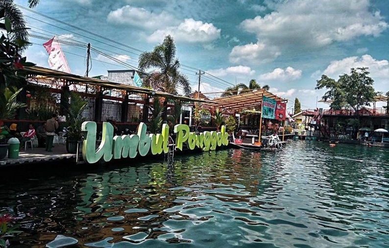
Umbul Ponggok adalah salah satu objek wisata air yang paling terkenal di Klaten. Terletak di
Jalan Delanggu Polanharjo, tempat ini menawarkan pengalaman snorkeling dan diving di mata air
yang jernih. Airnya dihuni oleh berbagai jenis ikan air tawar yang berwarna-warni, menjadikannya
sangat menarik untuk pengunjung. Selain itu, Umbul Ponggok juga menyediakan jasa foto underwater
dengan operator profesional. Suasana di sekitar umbul sangat alami dan menenangkan, cocok untuk
bersantai bersama keluarga. Banyak pengunjung yang datang untuk berfoto karena keindahan
alamnya. Fasilitas seperti tempat penyewaan alat snorkeling juga tersedia. Biaya masuknya
terjangkau, sehingga bisa dinikmati oleh semua kalangan. Umbul ini menjadi pilihan populer bagi
mereka yang ingin menikmati liburan dengan aktivitas air. Pengalaman di Umbul Ponggok pasti akan
meninggalkan kesan mendalam.
Lihat
Lokasi
Janti Park
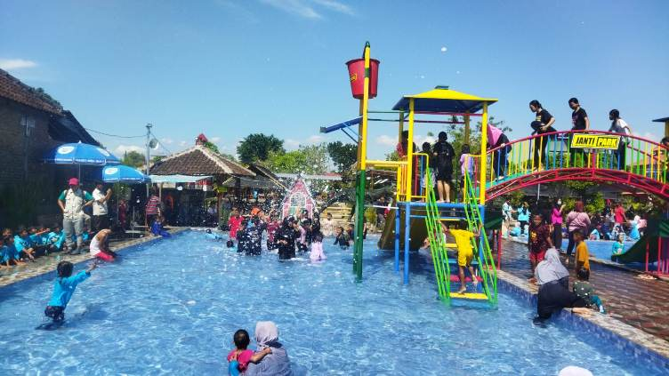
Janti Park Klaten adalah destinasi wisata air yang menyenangkan di Kabupaten Klaten, Jawa
Tengah, menawarkan pengalaman berenang. Terletak di kawasan Desa Wisata Janti yang kaya akan
sumber mata air alami, tempat ini memadukan wahana modern seperti kolam arus busa dengan elemen
alam seperti pepohonan rindang dan taman bunga yang cantik, memberikan suasana tropis yang ideal
untuk liburan keluarga. Berbeda dari waterpark kota besar, Janti Park menghadirkan kesederhanaan
pedesaan dengan air jernih langsung dari umbul pegunungan, yang tidak hanya dingin tapi juga
aman untuk kulit sensitif tanpa kandungan kaporit. Kawasannya yang luas memungkinkan pengunjung
bergerak bebas dari satu wahana ke wahana lain. Sejak menjadi populer di kalangan warga lokal
dan wisatawan dari Solo serta Yogyakarta, Janti Park telah menjadi simbol pariwisata
berkelanjutan di desa, mendukung ekonomi masyarakat melalui pengelolaan oleh BUMDes setempat.
Lihat
Lokasi
Wahana Outbond Alam Siblarak
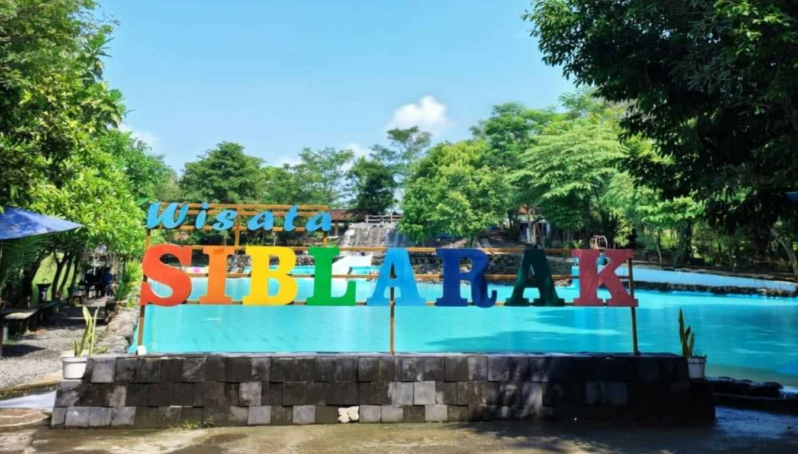
Outbond di kolam Siblarak adalah destinasi wiasta baru selain wisata air yang sudah terkenal
adalah Umbuk Kemanten dan Kolam Siblarak di Desa Sidowayah, Kecamatan Polanharjo.Lokasi Outbond
Siblarak yang juga ada di lokasi wisata air dengan biaya yang cukup murah terjangkau, merupakan
wahana baru yang cukup eksentrik dan menarik untuk dikunjungi. Wahana tersebut mulai dari
outbond, flying byur, camping ground. fun tubbing didukung dengan udara segar dan bersih di
dukung suasana pedesaan yang cukup adem dan membuat kerasan para pengunjungnya.
Lihat
Lokasi
De Wangen
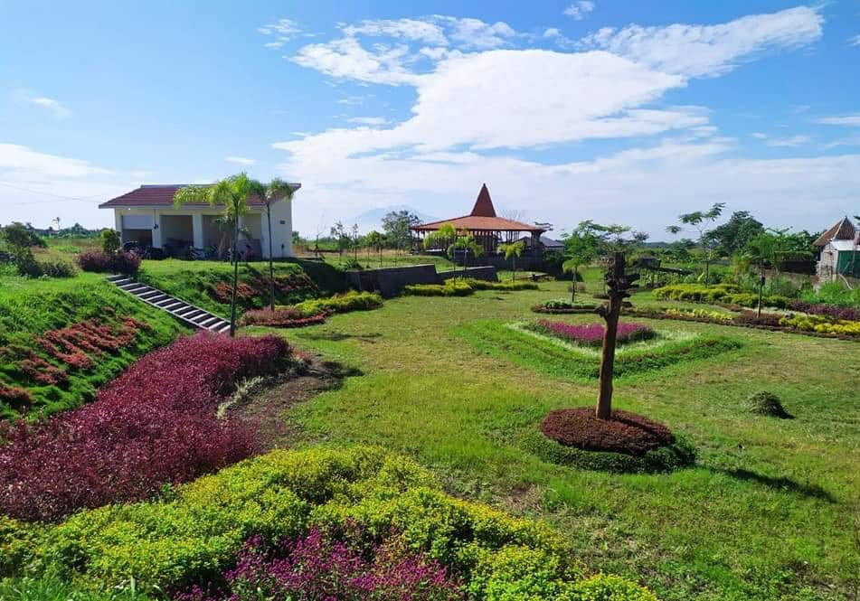
De Wangen merupakan salah satu destinasi wisata unggulan di Kecamatan Polanharjo yang menawarkan
keindahan alam pedesaan dengan suasana yang asri, sejuk, dan nyaman. Dikelilingi oleh hamparan
sawah serta lingkungan desa yang masih alami, De Wangen menjadi tempat yang tepat untuk melepas
penat dari kesibukan sehari-hari. Selain menyajikan panorama alam yang menenangkan, De Wangen
juga menyediakan berbagai aktivitas wisata yang dapat dinikmati oleh seluruh kalangan, mulai
dari wisata keluarga, edukasi, hingga kegiatan rekreasi di alam terbuka. Konsep wisata yang
mengedepankan kearifan lokal dan partisipasi masyarakat menjadikan De Wangen tidak hanya sebagai
tempat berwisata, tetapi juga sebagai sarana pemberdayaan ekonomi desa.
Lihat
Lokasi
Wahana Soko Alas

Wahana Soko Alas merupakan salah satu destinasi wisata baru sekaligus unggulan yang ada di
Klaten. Destinasi wisata ini tidak jauh-jauh dari permainan air ciri khas dari wisata yang ada
di
sekitar Polanharjo Klaten.
Hal tersebut karena daerah ini terkenal sebagai salah satu daerah dengan banyak wisata umbul.
Wisata umbul merupakan wisata yang biasanya terdiri dari kolam renang alami yang bersumber dari
mata air alami juga.
Wahana Soko Alas merupakan salah satu destinasi baru yang lokasinya tidak jauh dengan Umbul
Ponggok. Lokasi tepatnya berada di Jl. Delanggu- Polanharjo, Ngebakan, Nganjat, Kec. Polanharjo,
Kabupaten Klaten, Jawa Tengah 57474. Tempat wisata ini buka setiap hari dari pukul 09.00 - 21.00
WIB. Jadi jika ingin datang dan
menikmati keindahan dari tempat ini bisa datang pada jam operasional tersebut. Secara umum ada
beberapa daya tarik dari tempat ini, berikut beberapa di antaranya.
Lihat
Lokasi
New Rivermoon & Watu Kapu
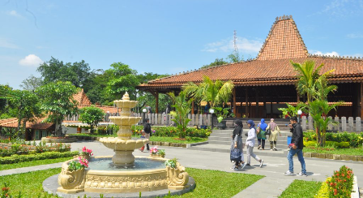
Kabupaten Klaten tak hanya terkenal dengan wisata umbul dan kolam renangnya yang jernih, tetapi
juga dengan wisata petualangan air yang semakin digemari oleh wisatawan muda. Salah satu
destinasi yang kini menjadi ikon wisata adrenalin di Klaten adalah New Rivermoon Tubing, sebuah
wahana wisata air yang menawarkan pengalaman menyusuri sungai alami dengan ban karet di tengah
keindahan alam pedesaan.
Berada di kawasan Karanglo, Kec. Polanharjo, Kabupaten Klaten, New Rivermoon Tubing menjadi
salah satu destinasi unggulan bagi pecinta alam dan pencari sensasi petualangan yang
menyenangkan namun tetap aman untuk segala usia. Suasana asri, air sungai yang jernih, serta
keramahan masyarakat lokal menjadikan wisata ini sebagai perpaduan sempurna antara rekreasi,
edukasi, dan petualangan.
Lihat
Lokasi
Desa Wisata Nganjat
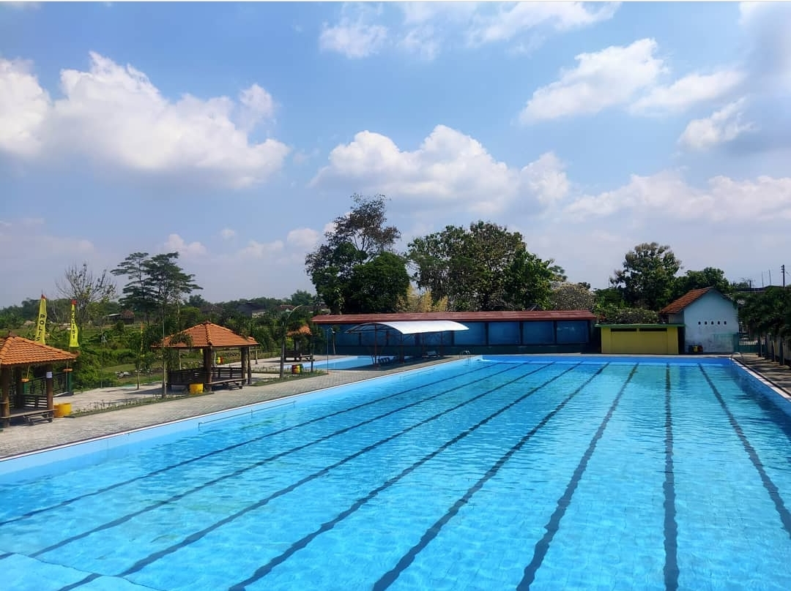
Nganjat adalah desa di kecamatan Polanharo, Klaten, Jawa Tengah. Desa nganjat memiliki luas 75
Ha dengan ketinggian tanah 150 m dari permukaan laut. Desa ini hanya berjarak 3 Km dari pusat
pemerintahan kecamatan Polanharjo. Nganjat merupakan desa yang tergolong kecil dengan jumlah
penduduk kurang lebih 1400 orang yang terbagi menjadi 4 RW dan 8 RT. Nganjat merupakan desa
kecil yang 70% kawasannya di dominasi oleh persawahan dan Kolam budidaya. Masyarakat di Desa
Nganjat mayoritas berprofesi sebagai petani Ikan Nila.
Lihat
Lokasi
Resto
Kecamatan Polanharjo memang terkenal sebagai tujuan wisata air di Kabupaten Klaten, seperti Umbul
Ponggok, Umbul Sigedang-Kapilaler, Umbul Besuki, dan sebagainya. Namun, tidak banyak yang tahu bahwa
Kecamatan Polanharjo juga menyimpan banyak tujuan kuliner yang wajib dikunjungi.
Koito Resto
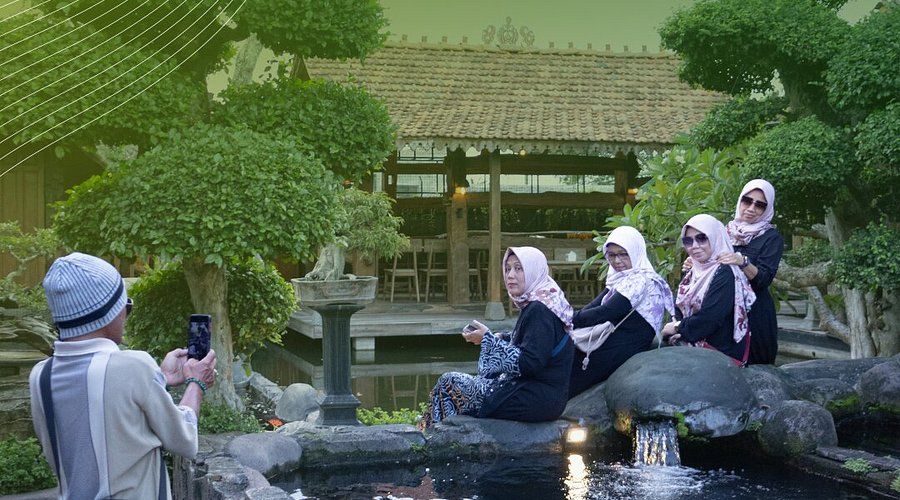
Resto ini dilengkapi dengan area Joglo yang asri, area lesehan yang nyaman, area Limasan yang
menawan, serta floating area yang memungkinkan pengunjung untuk menyantap makanan yang disajikan
langsung di atas air. Suasana yang asri dan hijau juga membuat para pengunjung betah
berlama-lama di sini.
Jam operasional: Setiap hari, pukul 09.00 – 21.00 WIB
Harga: Mulai dari Rp. 20.000,- per orang
Lihat
Lokasi
Ndalem Njanti
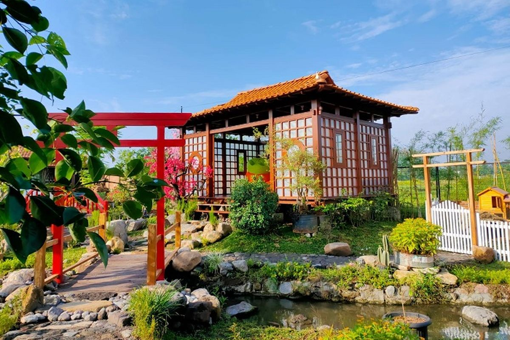
Resto ini mengusung tema gaya Jepang. Hal ini dapat dilihat dari konsep bagunan dan berbagai
pernak pernik yang khas Jepang. Uniknya, di sini kuliner yang dihidangkan tetaplah makanan khas
nusantara, mulai dari olahan ayam hingga ikan. Fasilitas di Ndalem Njanti juga lengkap, seperti
area parkir yang luas, berbagai spot foto yang cantik, dan mushola yang sejuk.
Jam operasional: Setiap hari, pukul 08.00 – 16.00 WIB
Harga: Mulai dari Rp. 20.000,- per orang
Lihat
Lokasi
Aroma Rasa
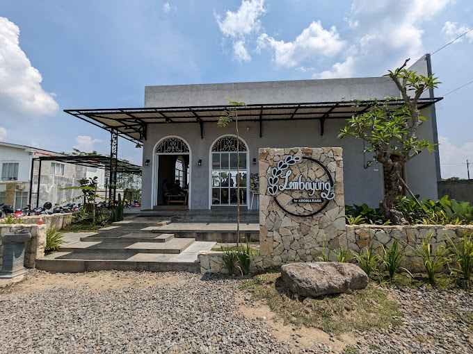
Suasana yang homie dan rindangnya pepohonan ala Ghibli langsung terasa saat memasuki halaman
Aroma Rasa. Area persawahan di seberang jalan juga menambah nilai estetika dari tempat ini. Tak
kalah menarik, Aroma Rasa menyediakan menu yang variatif mulai dari Ayam Taliwang hingga
croissant. Resto ini juga memiliki beberapa menu istimewa yang hanya bisa dipesan pada hari
tertentu, contohnya Nasi Dewata yang hanya tersedia pada hari Kamis.
Jam operasional: Selasa – Minggu, pukul 11.00 – 18.00 WIB
Harga: Mulai Rp. 20.000,- per orang
Lihat
Lokasi
Ketjeh Resto
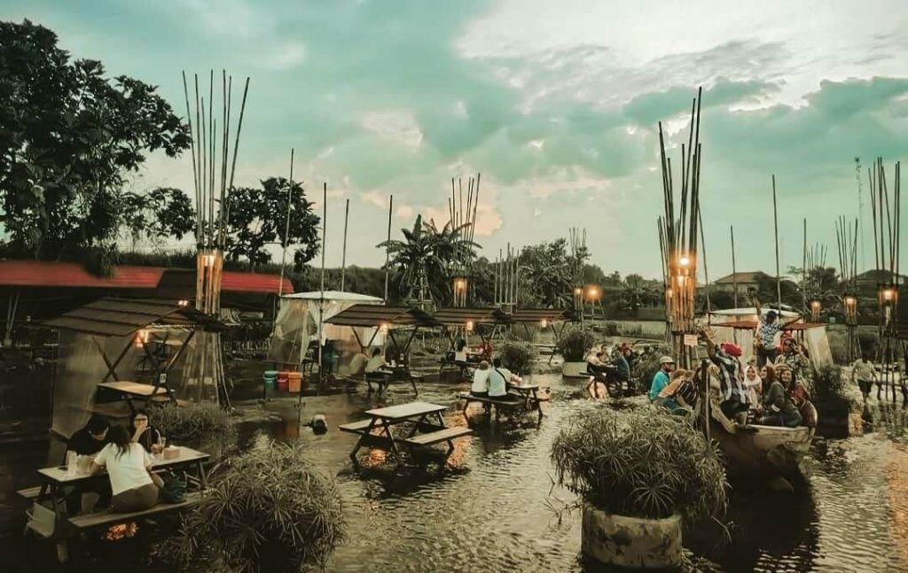
Konsep floating restaurant yang diterapkan oleh Ketjeh Resto menjadi pesona utama dari resto
ini. Di sini, pengunjung dimanjakan dengan banyaknya pilihan menu baik paket personal maupun
paket keluarga. Pastikan membawa sandal karet jika ingin memilih meja di tengah-tengah aliran
sungai. Pengunjung tidak perlu khawatir karna aliran sungai tidak deras sehingga tetap aman.
Sembari bermain air, pengunjung juga bisa menikmati udara segar sebab Ketjeh Resto berada di
area persawahan Desa Wangen, Kecamatan Polanharjo.
Jam Operasional: Setiap hari, pukul 08.00 – 17.00 WIB
Harga: Mulai Rp. 20.000,- per orang
Lihat
Lokasi
Watergong Resto dan Wisata
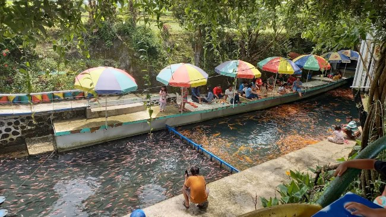
Watergong Resto menggabungkan konsep destinasi kuliner sekaligus wisata, dimana pengunjung bisa
bersantai dengan ditemani ratusan ikan. Tempat ini dulunya merupakan aliran sungai yang kotor
dan dipenuhi limbah rumah tangga. Hingga suatu hari seorang warga bernama Bapak Bagong Margono
turun tangan dan membersihkan aliran sungai tersebut.
Kini, tempat ini telah dikelola dengan baik menjadi tujuan wisata. Dengan panorama sawah yang
hijau, pepohonan yang rimbun, gazebo untuk berayun-ayun kaki, dan jembatan yang estetik,
Watergong Resto menjadi salah satu rekomendasi untuk berakhir pekan.
Jam operasional: Selasa – Minggu, pukul 08.00 – 20.00 WIB
Harga: Mulai Rp. 10.000,- per orang
Lihat
Lokasi
Resto 2 Ikan
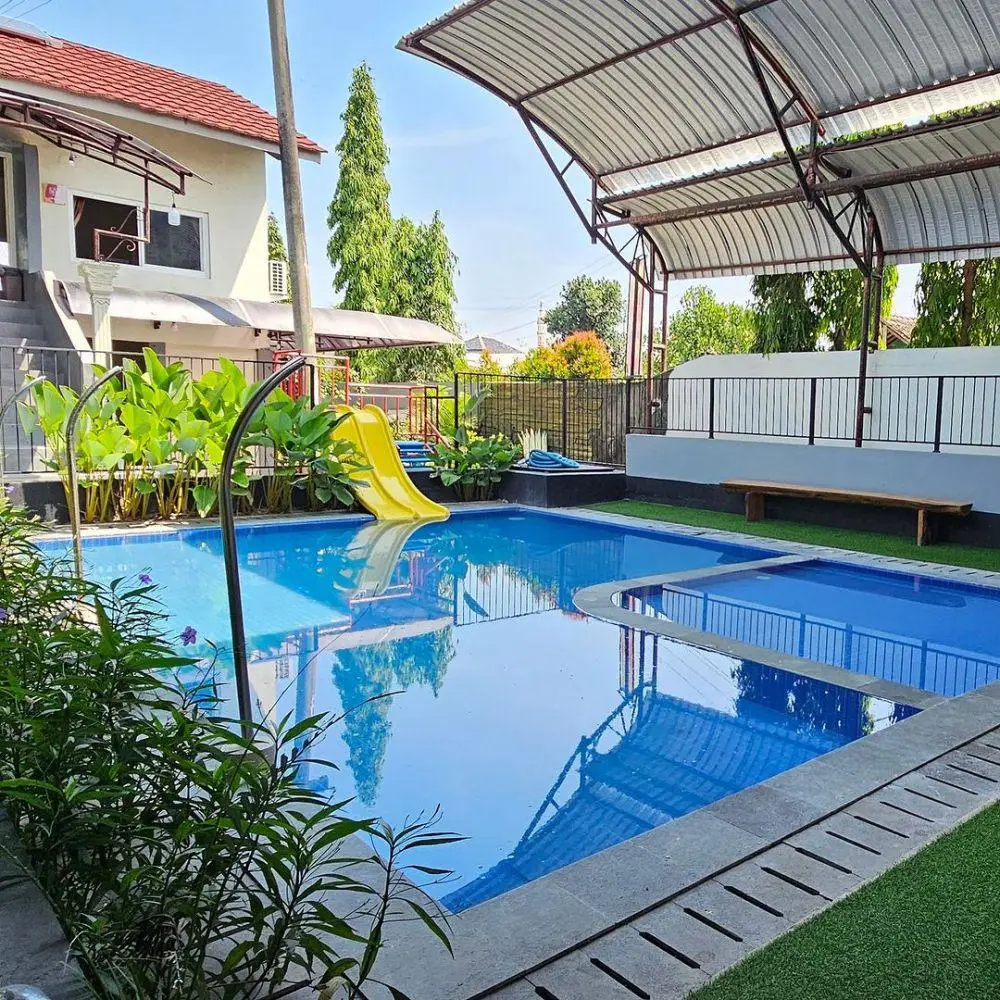
Resto ini dilengkapi dengan fasilitas infinity pool yang berhadapan langsung dengan panorama
alam. Resto 2 Ikan menyediakan fasilitas yang komplit, seperti VIP room, area lesehan, area meja
dan kursi, area garden, karaoke dan terapi ikan. Dalam hal menu, resto ini mempunyai banyak
variasi dengan harga yang terjangkau.
Jam operasional: Selasa – Minggu, pukul 08.00 – 17.00 WIB
Harga: Mulai Rp. 20.000,- per orang
Lihat
Lokasi
Waris Temurun
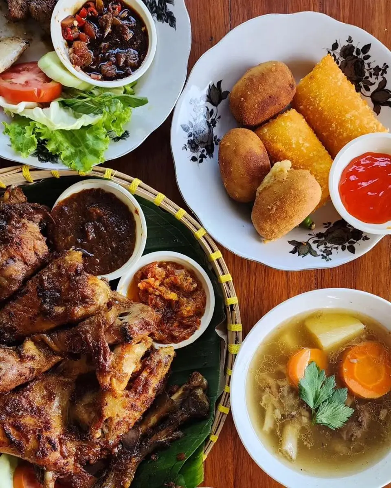
Saat menginjakkan kaki di halaman Waris Temurun, suasana sederhana dan klasik akan menyambut
para pengunjung, serasa berkunjung ke rumah nenek. Menu di Waris Temurun merupakan makanan khas
Jawa yang autentik. Pengunjung bisa memesan Manggut Iwak Pe hingga Ayam Kumut Khas Klaten di
sini.
Jam operasional: Selasa – Minggu, pukul 10.00 – 16.00 WIB
Harga: Mulai Rp. 10.000,- per orang
Lihat
Lokasi